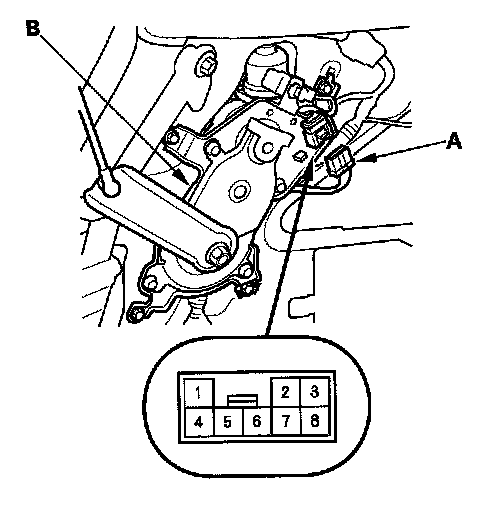
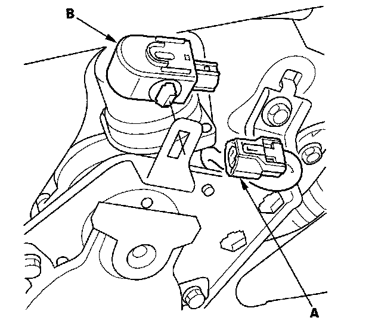

Power Tailgate Inside Beeper Test/Replacement
Power Tailgate Inside Beeper Test/Replacement1. Open the tailgate and remove the left rear pillar trim.

2. Disconnect the 8P connector (A) form the power tailgate drive unit (B).
3. Test the beeper by connecting battery power to the No. 2 terminal and ground to the No. 7 terminal. The beeper should sound.

4. if the beeper does not sound, disconnect the 2P connector (A) and check for an open in the wire between the 2P connector and the 8P connector. If the wire harness is OK, replace the beeper (B).